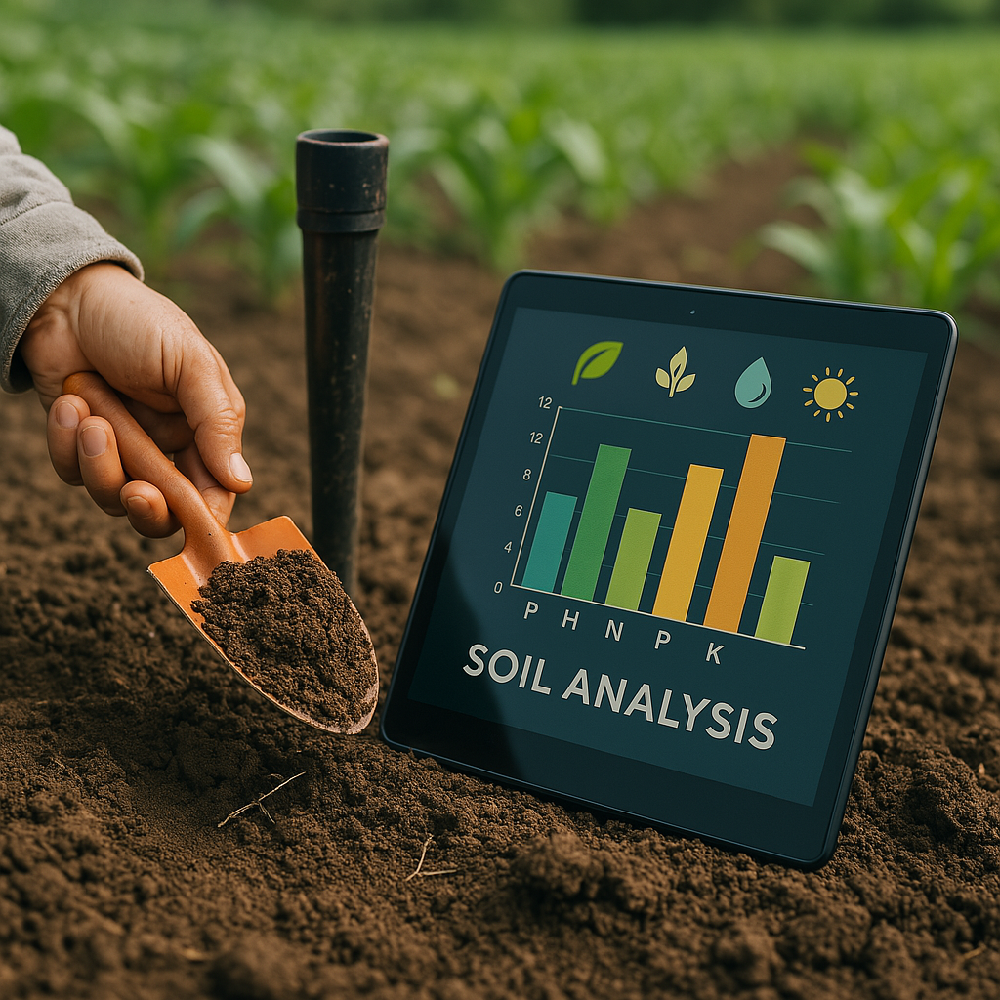
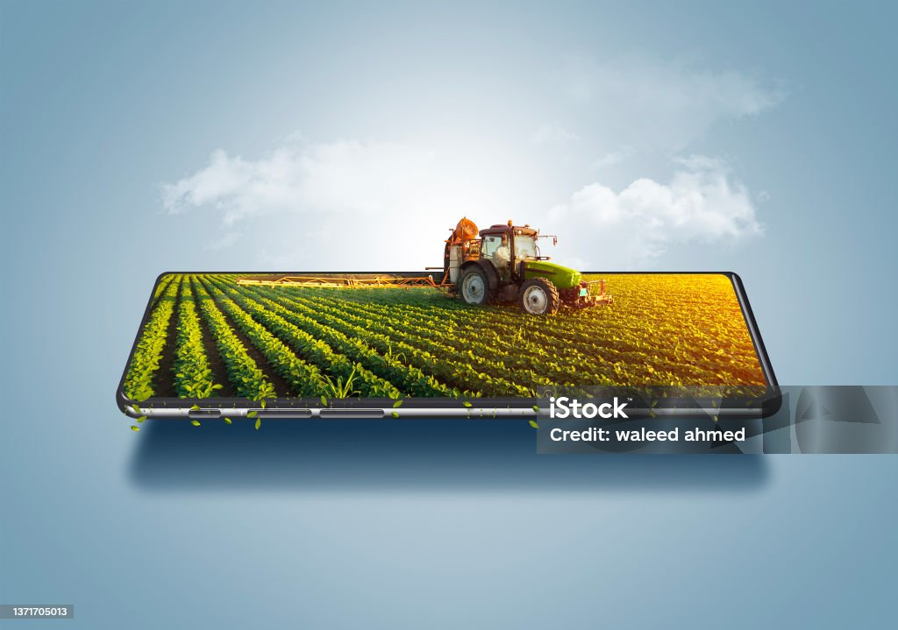

Qué Hacemos
Ayudamos a los agricultores a mejorar sus rendimientos mediante el análisis inteligente del suelo, recomendaciones personalizadas y el uso de tecnología accesible.

Soluciones que ofrecemos

📊 Análisis de suelo y nutrientes esenciales

📱 App de recomendaciones de cultivo y fertilización

🌾 Soporte técnico para prácticas agrícolas sostenibles
Beneficios para el agricultor
Menores costos de producción, mayor rendimiento por hectárea y una agricultura más amigable con el medio ambiente.